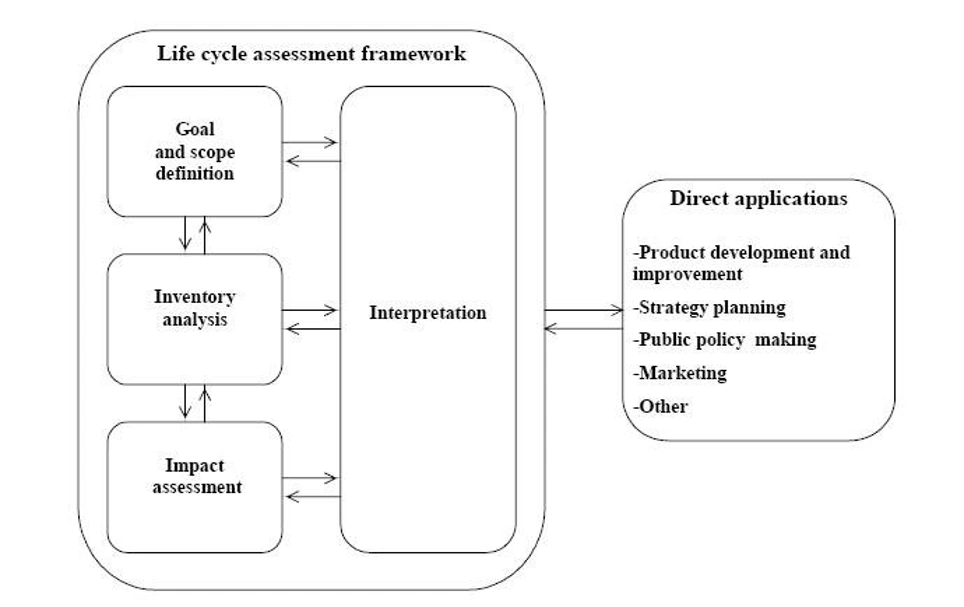
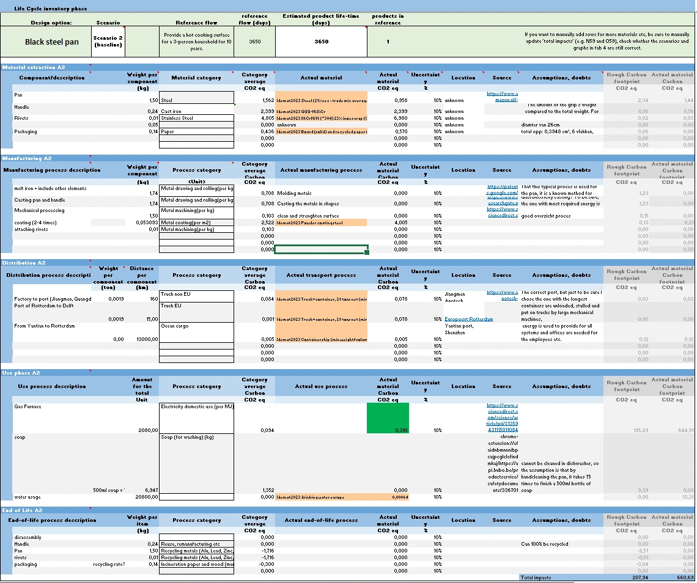
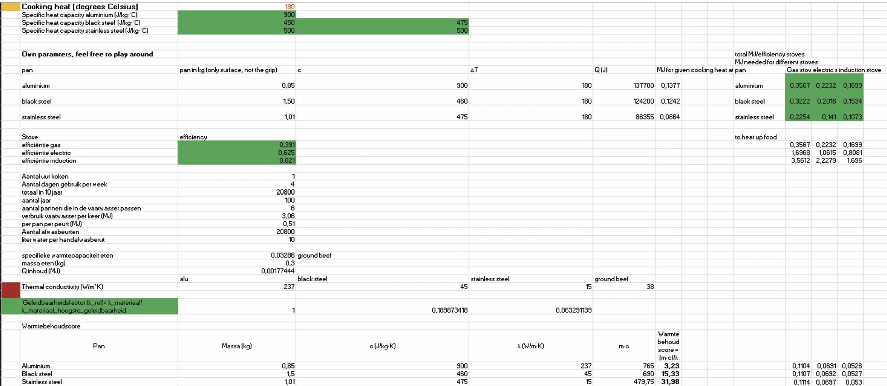
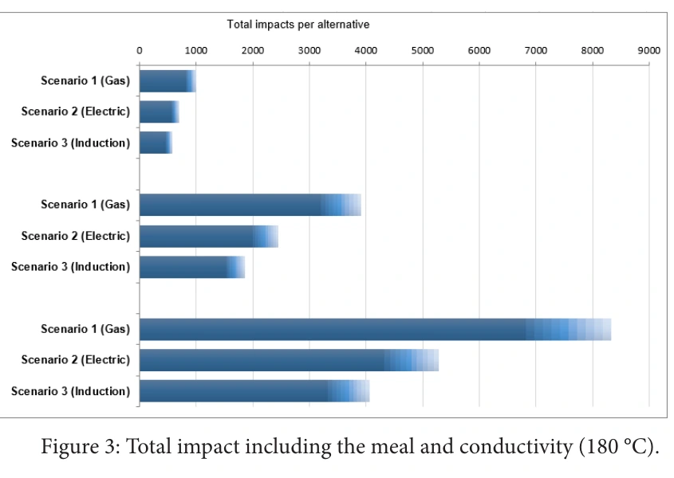
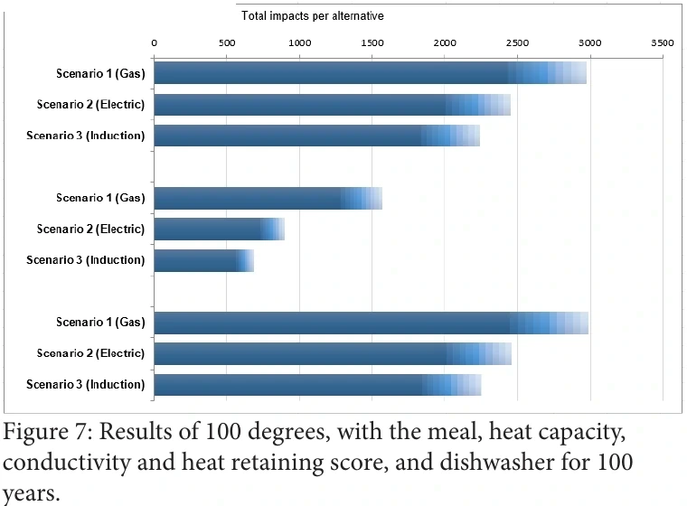
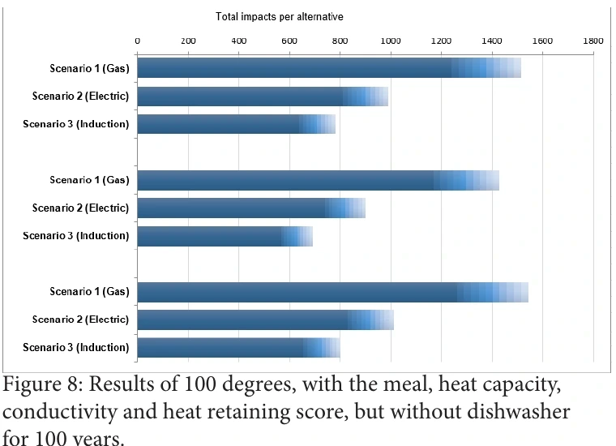

05 / Sustainability research
Cookware Lifecycle Assessment
A comparative lifecycle assessment exploring how pan material, cooking method and everyday use shape the environmental impact of cookware.

Compare the pan in the kitchen
The research asks which of three BK frying pans—aluminium, black steel (described in the report as cast iron) or stainless steel—has the lowest environmental impact when used on a gas, electric or induction stove. The functional unit is a cooking surface for a three-person household in the Netherlands, used four hours per week.
The report begins with a common 10-year comparison, then adds a 100-year reference flow to explore the much longer lifetime associated with black steel. It models cooking at 100°C and 180°C, creating nine material–stove combinations at each temperature. These are scenario results built from stated assumptions, not measurements of every BK pan in real kitchens.
Follow materials from production to end of life
The assessment follows five lifecycle stages: raw material extraction, manufacturing, distribution, use and maintenance, and end of life. A component-level inventory accounts for pan parts such as the body, handle, coating and rivets, alongside packaging and transport. Material and process data are drawn from Idemat2023 and other sources.
For the use phase, the model adds stove efficiency, pan mass and heat capacity, cooking frequency and duration, cleaning, and end-of-life recycling credits. A spreadsheet and the Fast Track LCA tool bring these data points together so the assumptions can be changed and compared.


Include the meal, not only the pan
Because cooking dominates the modelled impact, the assessment expands beyond the energy needed to heat an empty pan. It includes 300 grams of ground beef as a meal for three, and estimates how the pan materials’ thermal conductivity affects the energy and time needed to heat it. Specific heat capacity and a heat-retention score represent how much energy the pan takes to warm and how well it holds that heat.
The scenarios also vary stove type, cooking temperature and cleaning. The report uses average stove efficiencies drawn from references and estimates dishwasher energy by allocating one cycle across six pans. It excludes black steel from the dishwasher scenarios because the report treats it as unsuitable for that cleaning method.

Use assumptions can change the ranking
Across the modelled alternatives, induction has the lowest impact of the three stove types. The material ranking is less straightforward: black steel performs best in the pan-only comparison, but an intermediate result changes when the meal and heat transfer are included. In the final extended scenario, which also includes heat retention, the report concludes that black steel has the lowest modelled impact.
The report also compares a 100-year scenario with dishwasher use against one without it. It estimates that handwashing can bring total emissions to almost half those of the dishwasher scenario. These outcomes depend on the chosen reference flow and behaviour assumptions, so they should be read as comparisons between scenarios rather than universal product rankings.


Make the assumptions visible
The exact pan compositions and manufacturing processes were not publicly available, so the report uses the closest material and process proxies it could identify. It also makes assumptions about the shipping route, stove efficiency, material properties and the share of products recycled at end of life. The author notes that these uncertainties matter most in the use phase, where the model’s behavioural inputs have the strongest influence.
Heat transfer to food is theoretical in this assessment; how real cooking behaviour responds to different heating speeds would need follow-up testing. The work’s most useful outcome is therefore the comparison framework: it shows how stove choice, cooking habits and cleaning can affect results, and why reliable product data and representative use measurements are needed before making a definitive environmental claim.